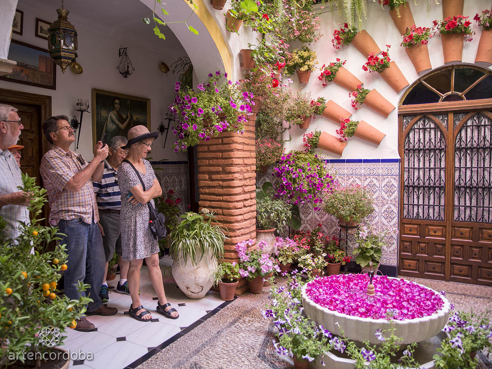
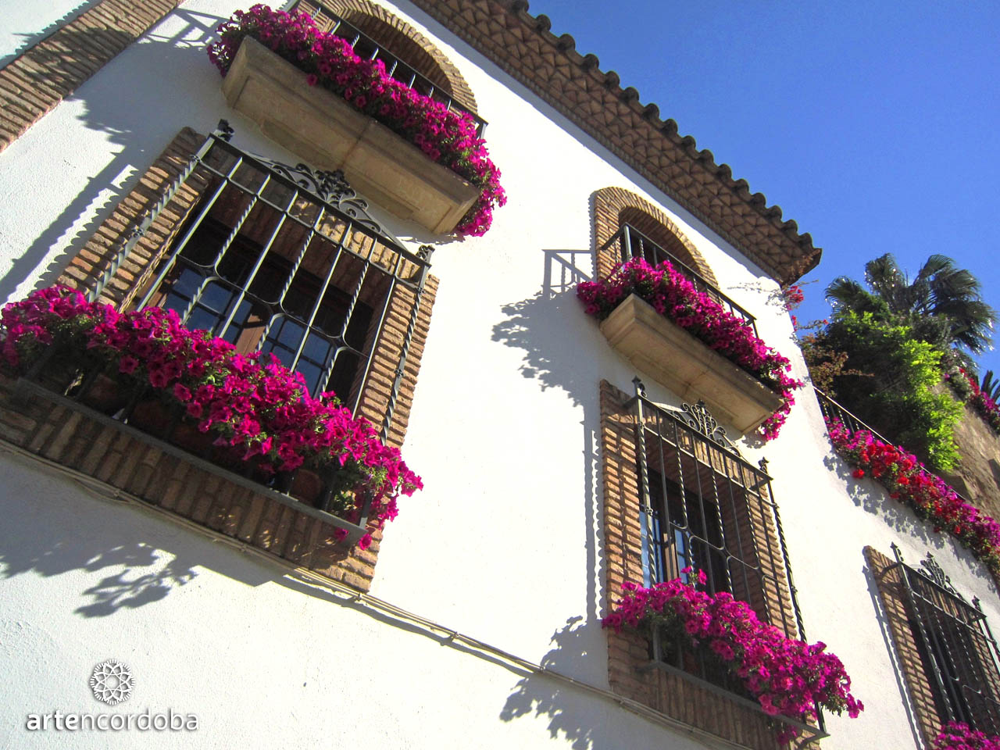

Los Patios
El concurso de los Patios de Córdoba comienza inmediatamente después de acabar Las Cruces de Mayo, y durante dos semanas los patios están abiertos para que todo aquel que lo desee pueda visitarlos. De las dos semanas que dura el evento la primera es la dedicada al concurso, mientras que en la segunda semana se realiza la entrega de premios. Si bien, los patios siguen abiertos para que puedan ser visitados, sobre todo los que han sido premiados ese año, que suelen recibir más atención tras el fallo del jurado. Además, en las cercanías de los mismos suelen celebrarse verbenas para que el visitante, a la misma vez que éste los visita, pueda pasar un buen rato tomando un buen vino y escuchando música de la tierra.

El concurso de los Patios de Córdoba se organiza en dos categorías. Por un lado se encuentra la categoría de “Arquitectura Antigua”, en la que participan aquellos patios que apenas han sufrido reformas y mantienen su aspecto de antaño, y en la que se otorgan tres primeros premios y seis accésit. La segunda categoría es la llamada de “Arquitectura Moderna o Renovada”, a la que pertenecen los patios que han sufrido cambios en su estructura o decoración, o simplemente, los que son de nueva construcción que siguen la línea de los tradicionales, y a los que también se les otorgan dos premios principales y cinco accésit. A estas categorías hay que sumar una serie de patios que no entran en concurso, pero que igualmente están abiertos al público.

Por otro lado, se organiza un concurso paralelo denominado de Rejas y Balcones, que se realiza a la misma vez que el de los Patios de Córdoba, y que consiste en adornar las rejas y balcones de las casas a base de elementos naturales y florales. En este concurso se otorgan un total de tres premios principales y tres accésit.